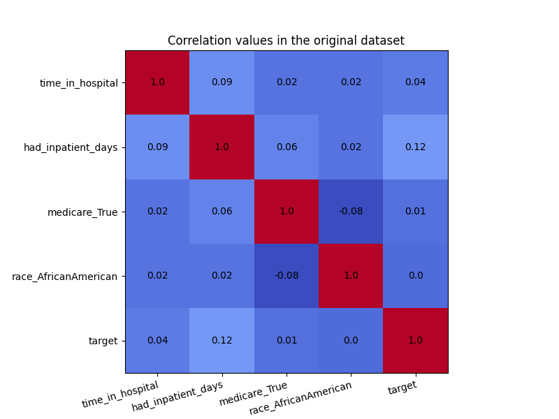
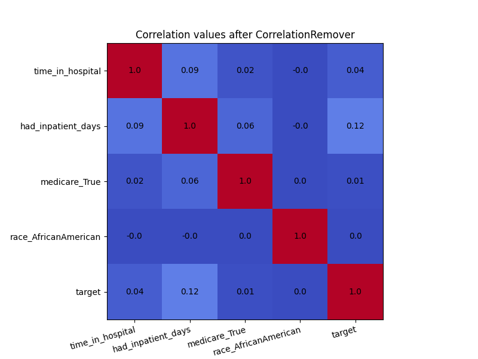

Note
Go to the end to download the full example code. or to run this example in your browser via JupyterLite
CorrelationRemover visualization#
This notebook demonstrates the use of the fairlearn.preprocessing.CorrelationRemover()
class. We will show this by looking at the correlation matrices
of the dataset before and after the CorrelationRemover.
Getting the Data#
This section may be skipped. It simply creates a dataset for illustrative purposes
We will use the well-known UCI ‘Adult’ dataset as the basis of this demonstration. This is not for a lending scenario, but we will regard it as one for the purposes of this example. We will use the existing ‘sex’ column to illustrate how the CorrelationRemover works. We start with some`import` statements:
import matplotlib.pyplot as plt
import numpy as np
import pandas as pd
from fairlearn.datasets import fetch_diabetes_hospital
from fairlearn.preprocessing import CorrelationRemover
Next, we import the data and transform the ‘sex’ column to a binary feature. We also drop most dummy columns that are created, since we are looking specifically at the African American race. Finally, the columns are rearranged for consistency.
data = fetch_diabetes_hospital()
X_raw = data.data[["race", "time_in_hospital", "had_inpatient_days", "medicare"]]
X_raw = pd.get_dummies(X_raw)
y = data.target
X_raw = X_raw.drop(
[
"race_Asian",
"race_Caucasian",
"race_Hispanic",
"race_Other",
"race_Unknown",
"had_inpatient_days_False",
"medicare_False",
],
axis=1,
)
X_raw = X_raw[
[
"time_in_hospital",
"had_inpatient_days_True",
"medicare_True",
"race_AfricanAmerican",
]
]
We are now going to fit the CorrelationRemover to the data, and transform it. The transformed array will be placed back in a Pandas DataFrame, for plotting purposes.
cr = CorrelationRemover(sensitive_feature_ids=["race_AfricanAmerican"])
X_cr = cr.fit_transform(X_raw)
X_cr = pd.DataFrame(X_cr, columns=["time_in_hospital", "had_inpatient_days_True", "medicare_True"])
X_cr["race_AfricanAmerican"] = X_raw["race_AfricanAmerican"]
cr_alpha = CorrelationRemover(sensitive_feature_ids=["race_AfricanAmerican"], alpha=0.5)
X_cr_alpha = cr_alpha.fit_transform(X_raw)
X_cr_alpha = pd.DataFrame(
X_cr_alpha, columns=["time_in_hospital", "had_inpatient_days_True", "medicare_True"]
)
X_cr_alpha["race_AfricanAmerican"] = X_raw["race_AfricanAmerican"]
We can now plot the correlation matrices before and after the CorrelationRemover. The code is from the matplotlib docs.
def plot_heatmap(df, title):
df["target"] = y
df = df.rename(columns={"had_inpatient_days_True": "had_inpatient_days"})
cols = list(df.columns)
fig, ax = plt.subplots(figsize=(8, 6))
ax.imshow(round(df.corr(), 2), cmap="coolwarm")
# Show all ticks and label them with the respective list entries
ax.set_xticks(np.arange(len(cols)))
ax.set_xticklabels(cols)
ax.set_yticks(np.arange(len(cols)))
ax.set_yticklabels(cols)
# Rotate the tick labels and set their alignment.
plt.setp(ax.get_xticklabels(), rotation=15, ha="right", rotation_mode="anchor")
# Loop over data dimensions and create text annotations.
for i in range(len(cols)):
for j in range(len(cols)):
ax.text(
j,
i,
round(df.corr().to_numpy()[i, j], 2),
ha="center",
va="center",
)
ax.set_title(f"{title}")
plt.show()
plot_heatmap(X_raw, "Correlation values in the original dataset")
plot_heatmap(X_cr, "Correlation values after CorrelationRemover")
plot_heatmap(X_cr_alpha, "Correlation values after CorrelationRemover with alpha = 0.5")
- 
- 
Even though there was not a high amount of correlation to begin with, the CorrelationRemover successfully removed all correlation between ‘race_AfricanAmerican’ and the other columns while retaining the correlation between the other features. Using a lower value of alpha results in not all the correlation being projected away.
Total running time of the script: (0 minutes 2.949 seconds)
Estimated memory usage: 172 MB